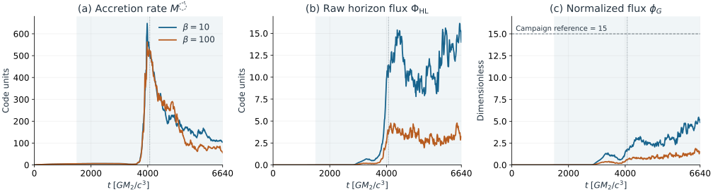
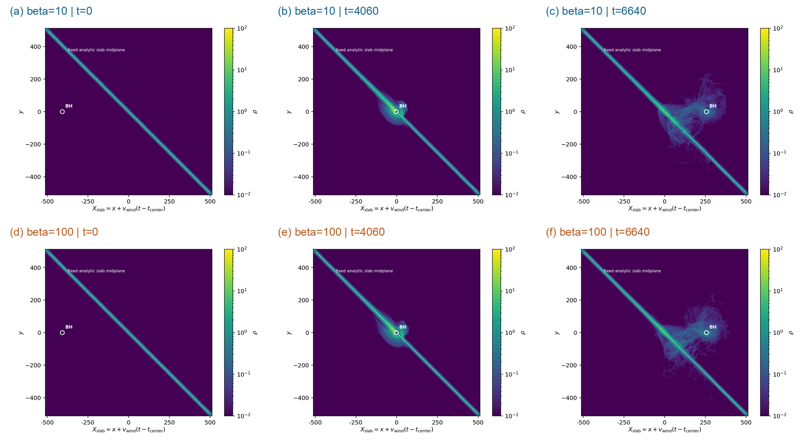
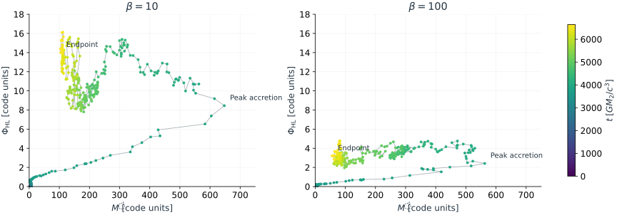
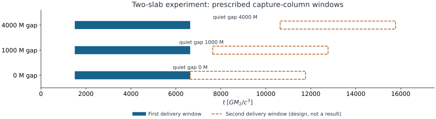

OJ 287–MOTIVATED BLACK-HOLE / DISK ENCOUNTERS
Magnetic capture during a finite disk passage
45° passage · β = 10 and 100
Result. Stronger fields deliver more horizon flux. Neither run meets the joint flux-and-power jet criterion during the simulated interval; gas is still draining.
Question. How much gas and magnetic flux survive to affect the next encounter?

Methods & interpretation
Shading marks delivery across the inclined capture column (t≈1505–6636); the dotted vertical line marks central crossing (t≈4071). Accretion peaks near t=3980, while raw flux peaks much later. Peak φG is 5.46 and 1.88, respectively. The dashed φG=15 line is a campaign reference, not a universal jet criterion. Histories are shown without smoothing; flux and accretion retain code normalization. Data · SVG.
{kind=link}
1. Setup
The solver holds the Kerr black hole fixed while a hydrostatically supported Gaussian slab passes it. Gravity focuses incoming gas; some is captured and some is deflected. The magnetic field is carried with the slab. Lower β means stronger magnetic pressure relative to gas pressure.
Hydrostatic support is imposed by a translating body force. This is a controlled local encounter, not a self-consistent global disk orbiting the primary black hole. The wide-view motion is a coordinate translation, not a moving spacetime metric.
- Black-hole spin
- a = 0.9
- Wind / inclination
- 0.1c / 45° from slab normal
- Gaussian scale height
- H = 5 rg,2
- Density contrast
- 1000
- Field
- Coherent slab-carried vertical field
- Mesh
- Static refinement; Δx=1 in capture ribbon, 2 in buffer, 0.25 near BH
- Units
- rg,2=GM₂/c²; time=GM₂/c³

Methods & interpretation
All panels retain the original x–y axes and identical logarithmic density limits, 10⁻²–10² code units. Coordinates are in the slab-rest frame: X=x+0.1(t−4070.71). The white marker locates the BH and is enlarged; it is not the horizon radius. The dashed line is the analytic slab midplane. Density below the color minimum is clipped; dark purple does not mean vacuum. These are slices, not projected column density or telescope images. Full-resolution PNG.
{kind=link}
2. Inspect the encounter
Download full transit · MP4 73 s · 4.7 MB · 1600 × 1460
Full saved interval, t=0–6640: both β cases, wide density, near-hole density and magnetization. Fixed scales and actual slice times; two saved-time steps per second, no fluid interpolation. Slice montage only; linked history plots remain interactive below.
β = 10
β = 100
(a–b) Wide density · x–y · slab frame · ±512 rg,2
(c–d) Near-hole flow · x–z · BH frame
Loading original snapshots…
Methods & interpretation
Each panel gives its actual timestamp and offset from the requested time because the two output schedules differ. Near-hole panels cover ±100 rg,2 in a different plane, with z along the spin axis; they are not simply a zoom into the wide panel. Magnetization σ=b²/ρ uses fixed limits 10⁻⁴–10³. Select gas density for limits 10⁻⁴–10². The horizon is masked. Linked history values use their nearest saved samples. This visualization alone cannot establish escaping energy or a jet. Frame times.

Methods & interpretation
The identical axes compare the two β cases directly. Since φG=√(4π)ΦHL/√Ṁ, its growth can reflect both flux accumulation and declining accretion. Plotting raw flux against Ṁ exposes that distinction. This trajectory is not evidence of a closed cycle or periodic hysteresis. SVG.
{kind=link}
3. Interpretation
For this topology, thickness, speed and inclination, delivery produces substantial accretion without establishing the campaign’s joint flux-and-power jet criterion. At t=6640 the accretion rates are still 104 and 56 code units, well above their pre-focus medians of ≈4.3. A later change during draining remains possible.
Recorded histories are finite, and maximum normalized magnetic divergence is 1.25×10⁻¹² / 3.76×10⁻¹³. These are numerical health checks, not convergence evidence. The β comparison does not test resolution, field topology, spin, radiation feedback, or repeated re-impact of a global disk. Earlier underresolved apparent-MAD runs are excluded from this note.
4. Illustrative emission
Figure 5 is not a radiation prediction. Absolute luminosity, temperature and diffusion are prescribed. No observational data or detection thresholds are plotted.
Spectrum and observing bands
Idealized top-hat windows, not calibrated telescope responses. Selecting a band highlights its energy range; it does not change the emission model.
Methods & interpretation
Each prescription imposes a β=10 peak luminosity and hot/reprocessed Planck components; β=100 retains its relative driver amplitude. The spectrum keeps a fixed shape within each prescription. The time slider changes the selected sample and spectral normalization, not the simulation. Scaling assumes M₂=1.5×10⁸ M☉, z=0.306 and dL=1588.6 Mpc; one simulation time unit becomes 0.0111682 observer days. This is neither a mass measurement nor a calendar forecast. Absorption, the primary jet, telescope response and radiation feedback are omitted. Log axes omit zero and clip sub-range values. Actual predictions require a 3-D emissivity, opacity and cooling audit. Assumptions and data.
Gas-derived light curves require electron temperatures, opacities and radiation transport. The emission models above are prescribed, not fitted to observations.
5. Memory between impacts

Methods & interpretation
Two initially distinct same-polarity slabs test gas and magnetic flux retained by the secondary. They do not represent a second strike through the same evolving disk patch. No second-passage result is included here. For same-disk recovery, a separate experiment must retain shear, restoring gravity, thermal evolution and the disturbed wake. SVG.
{kind=link}
Next: measure the second-hit response against a single-hit control while varying waiting time and wake offset. Track surface density, thickness, energy and magnetic stress; infer light only after validating transport.
For QPEs and EMRIs, the target is a history-dependent delay between crossing and flare. Extrapolation requires matching gravitational, disk and cooling scales; these runs do not evolve an inspiral.
Context and comparisons
- Komossa et al. (2023): missing predicted thermal outburst; contrast with Valtonen et al. (2023) on revised timing and solar-gap coverage. Our local runs do not settle this orbital interpretation.
- Pelle et al. (2026): radiative post-processing distinguishing secondary accretion from ejecta emission. The most direct methodology comparison for future emission work.
- Ressler et al. (2025) and Lam et al. (2025): global magnetized and local relativistic collision studies. Accretion after impact is not itself a novel claim.
- Garain, Zrake & Haiman (2026): global disk response and secondary pickup disks. Our local calculation cannot test the primary’s global response.
- Yao et al. (2026): stellar debris from prior encounters affects later disk interactions; stellar stripping is a different memory mechanism from our black-hole capture problem.
- Zhu et al. (2026): disk atmosphere and breakout geometry affect flare duration. The ambient atmosphere must be assessed physically, not removed for visual clarity.
- Chakraborty et al. (2025): inference from QPE timings motivates testing history-dependent emission delays.